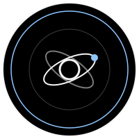
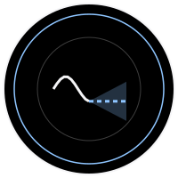
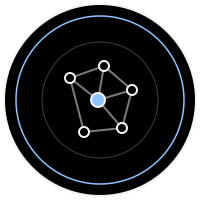

AI agents and LLMs
Agents that act inside bounds a human signed, and hand work to each other in messages that code checks.
LLM agents, multi-agent systems, tool calling, MCP, structured outputs, QLoRA, prompt-injection defense, LLM evaluation
Montreal · Concordia University · Winter 2027 internships
AI agents, deep learning and quant research, built from scratch and measured honestly.
Mission manifest
Six projects. Each has its own mission page with the method, the results and the limits. Filter by the kind of role you are hiring for.
Aurvane: every agent action, signed, bounded, visible. An agent may read anything, but untrusted text can never choose where money or data goes.
7 of 30
Attacks that landed, with Aurvane
Simulated worst-case agent, 60 paired tasks, deterministic, run once. Without Aurvane, 30 of 30 landed.
What it provesUntrusted text cannot steer an agent's money or data. Against a simulated agent that obeys every injection, attacks that landed fell from 30 of 30 to 7 of 30, and money lost from 12,135 CAD to 135 CAD.

A long-short portfolio that keeps the intended stock bets and removes unintended sector and factor risk, with PyTorch models for the views, the risk, and the decision itself.
17% → 61%
Share of risk from intended stock bets, naive to optimised
Ex-ante share of portfolio variance from stock-specific bets, independent Barra-style model, out of sample from January 2008. The end-to-end model keeps 47%.
What it provesMaking the optimiser neutral to sectors, beta, size and value raised the share of risk from intended stock bets from 17% to 61%. Training through the optimiser gave the best net Sharpe, 0.58 against −0.03 for the classical optimiser; the gap is not statistically significant, and adding the deep return model on top did not help.

Orbit Code: a planner, a coder, a test runner, and a reviewer. The reviewer can refuse a patch that fails the hidden tests or edits the tests.
0.333 → 0.764
Schema-valid rate, fine-tuned vs base team
Qwen2.5-1.5B-Instruct, QLoRA, harness v3, 12 frozen tasks, scored once. 95% interval on the difference 0.264 to 0.607, above zero.
What it provesFine-tuning a 1.5B model raised its schema-valid tool-call rate from 0.333 to 0.764, with a 95% interval above zero. In code repair, a reviewer can refuse a patch that fails the hidden tests.
Code repair: 29 of 32 with the reviewer, 27 of 32 for a single agent. Paired 95% interval 0.000 to 0.15625 includes zero, so the gap is not an improvement.

A forecasting foundation model built from first principles, and the audit that caught a public benchmark corpus leaking its own test data.
0.688×
Test CRPS vs upstream AutoARIMA
patch_s2, one seed, 97 test configurations. 95% CI [0.624, 0.757], better.
What it provesA transformer trained from scratch is better than upstream AutoARIMA on the frozen test: CRPS 0.688×, 95% CI [0.624, 0.757].
How a central-bank surprise ripples through 53 markets, with forecasts published before each decision.
−1.10%
TSX move on a 10 bp Fed surprise
Announcement day, 90% band −1.59 to −0.61. Identified causal.
What it provesA 10 bp Fed surprise moves the TSX −1.10% on announcement day. The 90% band, −1.59 to −0.61, excludes zero.

An economic research terminal that traces how a cost shock travels through the world's production networks.
405
Country-sector nodes in one scenario solve
Seven OECD tables, 2016–2022. Historical structure, hypothetical cost scenarios.
What it provesOne local solve traces a cost shock through 405 country-sector nodes. On the one held-out year, ridge beat every neural and graph model.
Every figure on this site is read from data/projects.json, and each one names the result file it came from.
Flight systems
Four kinds of work, each backed by missions you can open and check.
Agents that act inside bounds a human signed, and hand work to each other in messages that code checks.
LLM agents, multi-agent systems, tool calling, MCP, structured outputs, QLoRA, prompt-injection defense, LLM evaluation
Models written and trained from scratch in PyTorch, scored once on frozen, pre-registered tests.
PyTorch, transformers, differentiable optimisation, time-series forecasting, mixed precision, scikit-learn, bootstrap intervals
Factor-neutral portfolios, walk-forward backtests, and causal estimates of how markets react to central banks.
Portfolio optimisation, risk models, cvxpy, factor models, econometrics, statsmodels, Newey-West inference, QUARCC
Typed, tested, reproducible code with CI, from Python SDKs and an MCP server to live sites and dashboards.
Python, TypeScript, SQL, FastAPI, DuckDB, Git, GitHub Actions, pytest, Playwright, Docker
Flight rules
The same four rules on every mission. They are why a number on this site means something.
Splits, metrics, baselines and the rule for a disappointing answer are tagged in git before the test set is opened.
Models refit on past data only. Tests fail if changing data after a decision date changes the decision.
Every comparison carries its interval. When the interval includes zero, the page says it is not an improvement.
Figures are read from one data file that names each result's source, and a check fails the build if a page drifts.
Inside three missions
Orbit · a team that reviews itself
Aurvane · a chain of trust
Deep Portfolio Constructor · learning through the decision
Flight record
NokiaAug 2026 to Sep 2026
Cairo, Egypt
Qatar National BankAug 2025 to Sep 2025
Cairo, Egypt
Concordia UniversityExpected May 2028
Montreal, QC
Certifications
Anthropic
Anthropic
Anthropic
IBM
Quantitative Research and Competitions Club (QUARCC), member, Concordia University.
Ground control
I build AI systems that can be trusted to act, train the models underneath them, and write the measurement down, including when the answer is no.